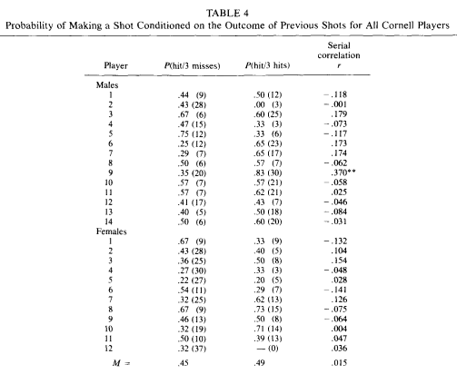

Viime syksynä, aikana kun Lauri Markkanen ei ollut vielä jokaisen suomalaisen uusi suosikkiurheilija, Tyyppiarvo julkaisi jutun niin kutsutun ”kuuma käsi”-ilmiön kiistellystä olemassaolosta koripallossa. Kiistanalainen oli myös jutun vastaanotto, kun allekirjoittanut joutui raivokkaasti puolustamaan skientologiselta vaikuttanutta matematiikkaa niin kasvokkain (fyysiset alterkaatiot pystyttiin pitämään asian tunnelatauksesta huolimatta vähäisinä) kuin milloin missäkin sosiaalisen median kanavassa. [sosiaaliseksi mediaksi voitaneen tässä yhteydessä laskea myös Tyyppiarvon kommenttipalsta, toim. huom.]
Kysessä ei kuitenkaan ollut ensimmäinen kerta, kun vastaava matematiikan ja arkijärjen ilmeinen riita aiheutti hämmennystä. Niin kutsuttu Monty Hallin ongelma ja sen esitetty ratkaisu saivat useammankin matematiikan professorin lähettämään räyhääjiä aiheesta kirjoittaneeseen lehteen. Tosin sillä erotuksella, että Monty Hall -tapauksessa oli kyse enimmäkseen vastaajien harhaisuudesta, kun taas Tyyppiarvon artikkelin palauteryöppy johtui osin myös alkuperäisen tekstin epäselvästä muotoilusta. Tämän jutun tarkoitus onkin avata sekaannusta ja ihmetystä aiheuttanutta todennäköisyyskysymystä hektiseen internet-aikaan sopivalla 9 kuukauden viivellä, minkä lisäksi sivutaan edellä mainittua Monty Hallia, esitellään systeemi jolla kasinolta poistutaan useammin voitollisena kuin tappiollisena ja aiheutetaan piinaavaa pääkipua kaikille jotka rohkenevat yrittää pysyä mukana loppuun saakka.
Ennen kuin palataan edellisessä osassa hämmennystä aiheuttaneeseen lappuja laatikossa-pulmaan, perustetaan ravintola. Harmillisesti bisnes ei vielä kuitenkaan ole täysin lähtenyt lentoon, ja syömässä käy ainoastaan kaksi asiakasta: kaverisi Jaakko ja oma äitisi. Jaakko valitsee ruokansa joka kerta summanmutikassa listan 100 vaihtoehdosta (menun laajuuden ja huonon suosion välistä yhteyttä olisi kenties syytä tutkia), mutta äitisi tilaa joka kerta tomaattikeiton. Olet keittiössä töissä, kun bongi kumauttaa jonkun tilanneen tomaattikeittoa. Kumpi asiakkaista tuli todennäköisemmin syömään?
Tuntuu itsestäänselvältä, että äitihän se siellä – ja näin luultavasti onkin. Vaikka Jaakko olisi tietysti myös saattanut tilata tomaattikeittoa, äidin tullessa syömään todennäköisyys tomaattikeiton tilaukseen on 100% kun taas Jaakolla vain 1%. Kun molempien tulo oletetaan a priori yhtä todennäköiseksi, osapuolien läsnäolon todennäköisyyksien suhde 100/1. Eli tieto siitä, mitä on valittu, muuttaa sen todennäköisyyttä kuka on valinnut.
Samaa teemaa sivuaa klassinen pulma kolikoista laatikossa. Olkoon yhdessä laatikossa kaksi kultakolikkoa, yhdessä kaksi hopeakolikkoa ja yhdessä yksi hopea- ja yksi kultakolikko. Nostetaan sattumalta yksi kolikko yhdestä laatikosta, ja huomataan että se on kultainen. Millä todennäköisyydellä saman laatikon toinen kolikko on kultainen?
Tämän vastaus on tietysti 50%. Koska ensimmäinen kolikko on kultainen, se ei voi olla laatikosta jossa on pelkkiä hopeakolikoita. Niinpä sen on oltava joko kulta-kulta tai kulta-hopea laatikosta, joista toisessa toinenkin kolikko on kultainen ja toisessa ei. 50%.
Eikun, ei olekaan. Jos oletetaan, että käsi olisi sattunut kulta-hopea laatikkoon, ensimmäisen kultakolikon noston todennäköisyys olisi 50% kun taas kulta-kulta laatikossa tietysti 100%. Niinpä kultakolikon nosto on merkki siitä, että käsi on luultavasti kulta-kulta laatikossa, ja siten toinenkin kolikko on todennäköisemmin kultainen. Täsmällisesti todennäköisyyksien suhde on 100/50 = 2/1, eli kultakolikon todennäköisyys on 2/3 = 67%. Jos ratkaisu ei tunnu aukenevean, analoginen tilanne olisi edellinen ravintolaesimerkki, jossa ensimmäisen tilauksen jälkeen pitäisi ennustaa, mitä salissa oleva asiakas tilaisi santsikierroksella.
Tästä päästäänkin jokaiselle tilastotieteen johdantokurssin käyneelle tuttuun Monty Hallin ongelmaan, joka kuuluu seuraavasti: Saat valita yhden kolmesta ovesta, joista yhden takana on auto ja kahden muun takana vuohi. Kun olet valinnut ovesi (olkoon se ovi C), ennen valitsemasi oven avaamista pelin isäntä avaa yhden kahdesta jäljellä olevasta ovesta (olkoon se A), paljastaen joka kerta vuohen, ja tarjoaa mahdollisuutta vaihtaa valintaasi vielä avaamatta olevaan oveen B. Kannattaako vaihtaa?
Kuten tiedetään, oven vaihtaminen kannattaa. Mahdolliset kombinaatiot ovien A ja B takana ennen oven A avaamista ovat vuohi-vuohi, vuohi-auto ja auto-vuohi, joista kaikki ovat tässä vaiheessa yhtä todennäköisiä. Kun tiedetään, että ovi A avataan, ovat vuohi-vuohi ja vuohi-auto ainoat mahdollisuudet, sillä A:n takana on oltava vuohi. Jos vuohi-auto on oikea kombinaatio, on pelin isäntä pakotettu avaamaan oven A. Sen sijaan jos vuohi-vuohi on oikein, olisi oven B voinut avata ihan yhtä hyvin. Siispä kun tiedetään että ovi A avataan, vuohi-auto on todennäköisimmin oikea kombinaatio, sillä silloin ovi A avataan joka kerta. Samoin kuin äidin asioidessa ravintolassa tomaattikeittoa tilataan joka kerta tai käden osuessa sopivaan laatikkoon kultakolikko nostetaan varmuudella. Ja kun vuohi-auto (C:n takana vuohi) on todennäköisempi yhdistelmä kuin vuohi-vuohi (C:n takana auto) kannattaa ovea tietysti vaihtaa.

Nyt on viimein boss-challengen aika. Unettomia öitä aiheuttanut ongelma kuului seuraavasti:
Heitetään tavallista kolikkoa 100 kertaa. Jokaista (vähintään) kolmen heiton kruunaputkea seuraavan heiton tulos kirjoitetaan lapulle ja laitetaan laatikkoon. Toistetaan operaatio n kertaa, jolloin saadaan n laatikkoa. Nostetaan nyt sattumanvaraisesti yhdestä laatikosta yksi lappu, millä todennäköisyydellä se on kruuna?
Nostetaan jostain laatikosta sattumalta lappu, ja huomataan että se liittyy heittosarjan (esimerkiksi) 13. heittoon. Nyt tiedetään, että edeltävät kolme heittoa (10, 11, 12) ovat kaikki kruunia (HHH). Jos kolmastoista heitto on H, päätyy myös 14. heitto laatikkoon, sillä sitä edeltää kruunaputki. Sen sijaan jos 13. heitto on T, 14. heitto ei päädy laatikkoon (kuten ei myöskään 15. tai 16.). Siispä, jos kolmastoista heitto on H, myös 14. heitto olisi ihan yhtä hyvin voinut tulla valituksi laatikosta. Kun tiedetään, että 13. heitto tuli valituksi, tekee se HHHT sarjasta todennäköisemmän kuin HHHH, sillä HHHH olisi tuonut laatikkoon lisää lappuja, siten pienentäen juuri 13. lapun noston todennäköisyyttä.
Tämä ei kuitenkaan tarkoita sitä, että edeltävä kruunaputki muuttaisi seuraavan heiton todennäköisyyttä, sillä tietenkään seuraavan kolikonheiton tulos ei ole riippuvainen edellisestä. Jos kaikki laput kaikista laatikoista kaadettaisiin yhteen isoon laatikkoon, kruunan todennäköisyys olisi ortodoksisesti 50%. Mutta kun katsotaan rajallisen pituisia ketjuja, joista rajataan heittoja tietyn pituisten edeltävien putkien perusteella, vääristymä syntyy. Koska klaava katkaisee kruunaputken ja siten vähentää lappujen kokonaismäärää laatikossa, bokseissa joissa on paljon klaavoja, on vähän lappuja. Ja kun lasketaan erikokoisten joukkojen suhteellisten osuuksien painottamaton keskiarvo, vääristymä syntyy. Tässä tapauksessa se on kooltaan noin 4 prosenttiyksikköä, minkä epäilevät Tuomaat voivat todeta tällä R-skriptillä.

Katsotaan nyt Gilovichin, Vallonen ja Tverskyn alkuperäisestä tutkimuksesta napattua taulukkoa, joka oli liitettynä myös edelliseen juttuun. Taulukko liittyy kokeeseen, jossa 26 Cornellin yliopiston pelaajaa laitettiin heittämään 100 heittoa etäisyydeltä, josta osumaprosentti olisi jotakuinkin 50%. Alimmalle riville on laskettu, että kolmea ohiheittoa seuraava heitto menee sisään 45% todennäköisyydellä ja kolmen heiton onnistumisputkea seuraava 49% tarkkuudella. Ei suurta eroa, ei mitään nähtävää. Kuitenkin kuten nokkelimmat ehkä jo osaavatkin aavistaa, kyseiset prosenttiyksiköt on saatu laskemalla yksittäisten pelaajien heittoprosenttien painottamaton keskiarvo! Ja kuten edellisessä kappaleessa opimme, kun lasketaan erikokoisten joukkojen suhteellisten osuuksien painottamaton keskiarvo, vääristymä syntyy. Suluissa olevat luvut kertovat kuinka monta heittoa kukin pelaaja otti onnistumis- ja epäonnistumisputkissa (”kuinka monta lappua kussakin korissa oli”), joista voidaan päätellä kaikkien pelaajien yhteenlasketut onnistumiset ja epäonnistumiset (”kaataa laput yhteen koriin”). Nopealla laskennolla todetaan, että kolmea ohiheittoa seuraavat heitot heitettiin yhteensä 161/400 = 40% ja kolmea koria seuraavat heitot 179/313 = 57%. Tämä sisältää kuitenkin valintaharhan: heittäjät jotka ovat kiskoneet kolme heittoa peräkkäin ohi ovat keskimäärin varmasti ylipäätään huonompia heittäjiä kuin kolmen korin putkeen päässeet – huono heittäjä harvemmin pääsee edes kokeilemaan, miltä tuntuu heittää onnistumisputkessa. Luvut eivät siis tuollaisenaan ole myöskään todiste kuuman käden olemassaolosta.
Tämä ei kuitenkaan tarkoita, että Gilovich, Vallone ja Tversky olisivat tahallaan taivutelleet dataansa hypoteeseihinsa sopiviksi. Painottamaton keskiarvo laskettiin mainitun ilmeisen valintaharhan välttämiseksi, eikä sen aiheuttama vääristymä ei ole todellakaan ilmeinen – sitä on juuri epätoivoisesti yritetty avata noin 1000 sanan pituisella selostuksella. Gilovich itse on vieläkin Kübler-Rossin viiden vaiheen ykköstasolla.
Loppunäytös: Kuinka voittaa ruletissa
Pelataan kolme kierrosta rulettia seuraavalla strategialla: Jos edellisellä pyöräytyksellä on tullut musta (M), panostetaan punaiselle (P), muuten ei pelata ollenkaan. (Yksinkertaisuuden vuoksi oletetaan rulettipyörä, jossa ei ole vihreää nollaa. Nolla vaikuttaisi todennäköisyyksiin hieman, muttei niin paljoa, etteikö saatu johtopäätös olisi edelleen voimassa.)
Mikäli kolmen pyöräytyksen tulos on PPP tai PPM, ei päästä pelaamaan ollenkaan, sillä edeltävällä pyöräytyksellä ei tullut mustaa. (Tässä tilanteessa voidaan aloittaa uusi peli.)
Muissa tilanteissa (MMM, MMP, MPM, PMM, PMP, MPP = 6kpl) veto asetetaan joko toiselle tai kolmannelle tai molemmille pyöräytyksille siten, että 3/6 (MPM, MPP, PMP) voitamme jokaisen vetomme, 1/6 (MMP) häviämme yhden ja voitamme yhden, ja 2/6 (MMM, PMM) häviämme kaikki. Siispä keskimääräisenä viikkona – olettaen että sunnuntai pyhitetään vapaapäiväksi – poistumme kasinolta kolmesti voittajana, kerran omillamme, ja vain kahdesti tappiollisina!
Edellä mainittu voitokkuus ruletissa ei tietenkään pidä paikkaansa. Jos keksit miksi, olet lukenut Halmeen artikkelit riittävän tarkasti.